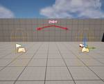

historia Inc – 株式会社ヒストリア
https://historia.co.jp
ゲームの企画・開発・制作協力の株式会社ヒストリアです。UE4やVRの最先端技術を使ってPlayStation®4などのコンシューマーゲームやアーケードゲーム、デジタルコンテンツを創出し、人生観を変えるような体験を提供します。
フィード
[UE5][C++]EUWでPlay In Editorを実行する
historia Inc – 株式会社ヒストリア
執筆バージョン: Unreal Engine 5.1 Editor Utility Widget (EUW)でPlay In Editor (PIE)実行を行う方法の紹介です。 EUWを使ったエディタ拡張を実装している時 […]The post [UE5][C++]EUWでPlay In Editorを実行する first appeared on historia Inc - 株式会社ヒストリア.
6日前
ヒラメキパズルアクションゲーム『スペースペンギンズ』のPS4・PS5・Nintendo Switch版をリリースしました！
historia Inc – 株式会社ヒストリア
自分の行動を真似（リプレイ）させてゴールを目指せ！ ヒラメキパズルアクションゲーム 『スペースペンギンズ』 PS4・PS5・Nintendo Switch版リリース！ 本日、自社オリジナルタイトル「スペース […]The post ヒラメキパズルアクションゲーム『スペースペンギンズ』のPS4・PS5・Nintendo Switch版をリリースしました！ first appeared on historia Inc - 株式会社ヒストリア.
12日前

[UE5]OpenLevelのスタート地点を指定する
historia Inc – 株式会社ヒストリア
執筆バージョン: Unreal Engine 5.3 今回は、OpenLevelのスタート地点を任意に指定する方法について紹介したいと思います。 レベルのスタート地点を指定する場合PlayerStartActorを配置す […]The post [UE5]OpenLevelのスタート地点を指定する first appeared on historia Inc - 株式会社ヒストリア.
13日前

[UE5]Nanite Tessellation を使ってみよう
historia Inc – 株式会社ヒストリア
執筆バージョン: Unreal Engine 5.4 こんにちはこんにちは。 アートディレクターのくろさわです。 今回はUE5.3でExperimentalにで導入されたNanite Tessellation を使ってみ […]The post [UE5]Nanite Tessellation を使ってみよう first appeared on historia Inc - 株式会社ヒストリア.
20日前
ヒストリア新作タイトル！大人数脱落式アクションゲームの『クローズドベータテスト』参加者募集！【6月14日(金)/15日(土)開催】
historia Inc – 株式会社ヒストリア
※本テストは終了しました ヒストリアは現在、新作の大人数脱落式アクションゲームを開発中です！ そこでリリースに向けて、クローズドベータテスト（以下、本テスト）を実施いたします。 アクションゲームが好きな人 […]The post ヒストリア新作タイトル！大人数脱落式アクションゲームの『クローズドベータテスト』参加者募集！【6月14日(金)/15日(土)開催】 first appeared on historia Inc - 株式会社ヒストリア.
1ヶ月前
[UE5]UE5でMIDIが使える！「Harmonix」プラグインでプレイヤーアクションに応じたメロディ再生
historia Inc – 株式会社ヒストリア
執筆バージョン: Unreal Engine 5.4 ヘイガイズ！エンジニアの片平です！ 今回は UE5.4 で追加となった「Harmonix」プラグインを使用して、 プレイヤーの操作に対してBGMに合ったメロディを再生 […]The post [UE5]UE5でMIDIが使える！「Harmonix」プラグインでプレイヤーアクションに応じたメロディ再生 first appeared on historia Inc - 株式会社ヒストリア.
1ヶ月前
[UE5] PushModel型のReplicationを使い、ネットワーク最適化を図る
historia Inc – 株式会社ヒストリア
執筆バージョン: Unreal Engine 5.3.2 こんにちは。エンタープライズエンジニアの方井です。 本日はPushModel型のReplicationを試してみようと思います。 UE5 Deep […]The post [UE5] PushModel型のReplicationを使い、ネットワーク最適化を図る first appeared on historia Inc - 株式会社ヒストリア.
1ヶ月前
[UE5]レベルデザインに便利なショートカット紹介
historia Inc – 株式会社ヒストリア
執筆バージョン: Unreal Engine 5.3.2 「レベルデザインは速度が命なのじゃ。」 これは、筆者があるプロジェクトにアサインされた初日に、先輩レベルデザイナーに言われた言葉です。 今回はレベルデザインを行う […]The post [UE5]レベルデザインに便利なショートカット紹介 first appeared on historia Inc - 株式会社ヒストリア.
1ヶ月前
【予告】Unreal Engine 5 学習向け作品制作コンテスト「第22回UE5ぷちコン」を7月19日（金）より開催します！
historia Inc – 株式会社ヒストリア
２、３日でサクッと作ってサクッと応募！ “第22回UE5ぷちコン”開催決定！ 開催期間：2024年7月19日(金)～2024年9月8(日)(9月9日(月)AM10:00)まで！ UE5ぷちコンは、株式会社ヒ […]The post 【予告】Unreal Engine 5 学習向け作品制作コンテスト「第22回UE5ぷちコン」を7月19日（金）より開催します！ first appeared on historia Inc - 株式会社ヒストリア.
2ヶ月前
[UE5]テクスチャでキャラクターの表情を切り替える
historia Inc – 株式会社ヒストリア
執筆バージョン: Unreal Engine 5.3 はじめに こんにちは 今回はテクスチャでキャラクターの表情を切り替えます。 ３Dキャラクターに表情をつける方法としては２つあります。 表情を制御するボーンをアニメーシ […]The post [UE5]テクスチャでキャラクターの表情を切り替える first appeared on historia Inc - 株式会社ヒストリア.
2ヶ月前